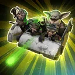
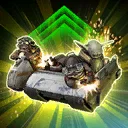
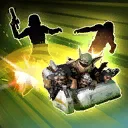

Grogu & Anzellans
This adventurous group aids their allies through healing and other antics
This adventurous group aids their allies through healing and other antics

Deal 1 True damage to target enemy and inflict 1 stack of Off Balance for 1 turn. During Grogu & Anzellans' turn, inflict 1 stack of Force Influence for 1 turn. During enemy turns, Ability Block them for 1 turn.
Grogu & Anzellans and a random Support ally gain Tenacity Up for 2 turns.

Equalize all allies' Health, then grant them Defense Up for 2 turns. Attacker and Tank allies gain 1 stack of Endure for 1 turn.
Mandalorian or New Republic allies recover 30% of their Max Health and gain 2 stacks of Heal Over Time for 2 turns.

Dispel buffs on all enemies and deal Physical damage to them.
All allies gain Dramatic Entrance until the end of Grogu & Anzellans' next turn and 3 stacks of Heal Over Time for 2 turns. Other Healer and Support allies Stealth for 1 turn.
Target New Republic ally gains Retribution for 2 turns and their cooldowns are reduced by 1. Target enemy is inflicted with 1 stack of On the Run and their cooldowns are increased by 1.
At the start of battle if all allies are New Republic, allies gain 30% Max Health and Protection and Deflective Ward for 1 turn or until they take damage.
Whenever an Attacker or Tank ally loses Deflective Ward, Retaliate, Retribution, or a Taunt effect, trigger their stacks of Heal Over Time.
At the start of each enemy turn, Grogu & Anzellans gains 5% Defense (stacking) until the end of their next turn. Allies ignore Taunt effects during enemy turns.
If there is an allied New Republic Galactic Legend or there are no other Galactic Legends in the battle, whenever a New Republic ally is Stunned during an enemy turn, dispel it and reduce their cooldowns by 1 and whenever a New Republic ally is Dazed, dispel it and they recover 20% Health.
Omicron Boost : While in Grand Arenas if all allies are Mandalorian or New Republic and there is an allied New Republic Galactic Legend or there are no other Galactic Legends in the battle: At the start of battle, allies gain an additional 20% Max Health and Protection and Deflective Ward for 1 turn or until they take damage. Whenever Grogu & Anzellans use a Special Ability they gain Untargetable for 1 turn.
At the start of each encounter, if all allies are New Republic, Distract all enemies for 1 turn, which can't be resisted, and whenever an enemy gains Speed Up, Distract them until the start of Grogu & Anzellans' next turn and inflict them with 1 stack of On the Run.
At the start of each ally's turn, Grogu & Anzellans gains 1 stack of Force Connection (stacking, max 50) for the rest of the encounter. This limit is increased to 100 stacks if any version of The Mandalorian is an ally.